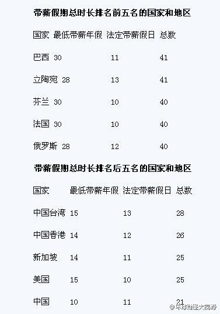

这是谷歌和苹果、微软以及SP500指数在过去一个季度的股价走势比较。可以明显看到，在谷歌这个业绩报告之后的大幅下滑只不过是过去一个季度股价过度增长的简单回调。在下滑后，谷歌一个季度依然保持14%的强势增长，比大盘高10%。充分说明，华尔街其实认可谷歌的强势业绩，不过之前炒作过头了。
什么? 美国人平均一年只有14天年假，还平均有2天没有用掉？ 在它统计的国家中排名倒数第三，仅次于日本和韩国？ //@zigwei: 这个表其实不太准。我觉得丹麦德国之类的休的肯定比俄罗斯多。我也不知道这是为啥，不过以“勤劳”著称的德国人民休假的确很多。而且主要是他们能休的…… 网页链接@新财富时间:【全球带薪休假排名 中国以21天垫底】美国有线电视新闻网(CNN)发布的一份各国“带薪假期”时间长短的排行榜显示，巴西和立陶宛以41天位居榜首，中国以21天排名最后一位。不少国内上班族看后表示，别说21天，连这一半的带薪假期都没有。（济南日报） 网页链接 
挺康神！ //@ares李佳文: 干死丫挺的 //@kxn9:我去，沾屎的活不能干啊。宁可认怂。//@tinyfool: 两个神之间的对决重要来临了，拭目以待---:抱歉，此微博已被作者删除。查看帮助： 网页链接